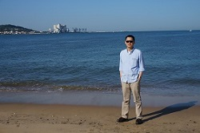

 蒋爱民，男，加拿大温莎大学电气工程专业，博士，2012年入选河海大学“青年教授”。
主要研究兴趣为稀疏表示、压缩感知、信号处理理论、数学优化及数值计算等。 2012年入选河海大学“青年教授”、“优秀创新人才支持计划”，2014年入选江苏省“青蓝工程优秀青年骨干教师”，现担任IEEE电路与系统协会数字信号处理技术委员会委员。
主持国家自然科学基金青年项目1项，江苏省自然科学基金面上项目1项，教育部留学回国人员科研启动基金1项。近年来，在IEEE Transactions Signal Processing、IEEE Transactions on Circuits and Systems I、ICASSP、ISCAS等国内外重要学术期刊和会议上发表论文20余篇，长期担任IEEE各类期刊和会议的审稿人。